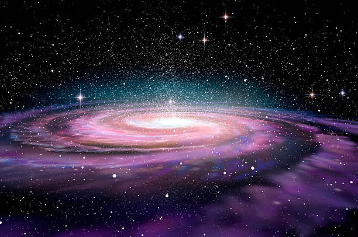

The Milky Way Galaxy
Welcome to Big Planetarium. This website was created to teach visitors about space in a simple and interactive way. The home page introduces the Milky Way, which is the galaxy that contains our Solar System, planets, stars, dust, and gas.
The Milky Way is a huge spiral galaxy made up of billions of stars. From Earth, it can sometimes be seen as a pale band of light stretching across the night sky. Scientists use telescopes, satellites, and space missions to learn more about it.
This website also includes accessibility features and interactive tools so users can explore the content in a way that suits them best.

Accessibility Options
These control features make the site easier to read. The high contrast setting makes changes to the colors in order to make the text stand out more, and the large text mode increases the font size.
Milky Way Fact Generator
Click the button below to display a random fact about the Milky Way. This adds a simple JavaScript interaction to the page.
A galaxy fact will appear here.
Educational Video
This embedded video gives a short introduction to the Milky Way and supports the written content on the page with multimedia.
Why Learn About Space?
An appreciation of space allows us to better understand where humanity stands in the cosmos and may motivate future scientists, engineers, and adventurers. Websites such as these provide an opportunity for individuals to learn about scientific subjects through text, video, images, and interactivity.
On the next page, you can explore Mars and discover why it is one of the most studied planets in our Solar System.
Galaxy Image
This additional galaxy image gives the homepage more visual content and makes the design feel more complete. It also supports the topic of the Milky Way and wider space study.
